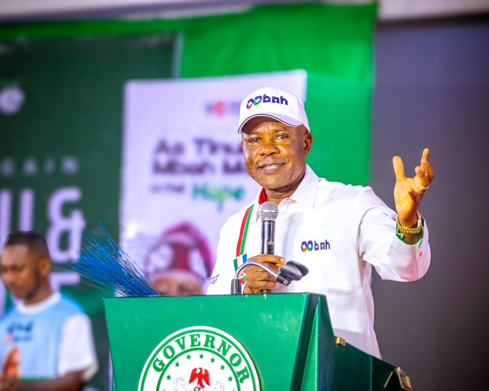

2027: Udeh unveils ATM support group for Tinubu, Mbah, APC candidates

Minister of Innovation, Science and Technology Kingsley Udeh has inaugurated As Tinubu and Mbah Move (ATM), a support group campaigning for President Bola Ahmed Tinubu, Enugu State Governor Peter Mbah and other APC candidates in the 2027 elections. The group says it will use technology to organise voter outreach and monitor activity across Enugu State’s 4,145 polling units.
At the launch, Mbah urged members to take the enthusiasm from the event into communities, families and polling units. He said the group’s success would depend on whether it converted that energy into grassroots engagement and electoral support. He encouraged members to point voters to projects including Smart Green Schools, the International Conference Centre, the Presidential Hotel and the International Hospital. He also acknowledged that poverty, unreliable electricity, water shortages and unpaved roads remained challenges in some communities.
Mbah made the case for Tinubu’s re-election, describing the President as a unifier and defending the removal of the fuel subsidy and the unification of foreign exchange rates as difficult reforms intended to support economic stability and investment. He also cited federal infrastructure projects in the South-East, including work on the Enugu-Onitsha and Enugu-Port Harcourt highways, and the concessioning of Akanu Ibiam International Airport. He said cargo operations and direct flights between Enugu and Guangzhou, China, were planned before the end of the first quarter of 2027. Mbah urged South-East voters to build alliances beyond the region and warned APC members against complacency.
Udeh said ATM would use an innovation situation room and digital dashboard to track membership, recruitment and mobilisation. Registration will require a Permanent Voter Card and voters’ identification details submitted through an online portal, he said. The governor will have access to the dashboard to review membership figures and activity. Udeh described the initiative as a data-driven alternative to unverified membership claims and pledged measurable support for APC candidates.
Mbah urged eligible voters to collect their voter cards ahead of the January 16, 2027 presidential and National Assembly elections and the February 6 governorship and State Assembly polls. The event included the swearing-in of group members and executives at state and local government levels. APC officials and other political and community representatives also attended.
Source: Premium Times